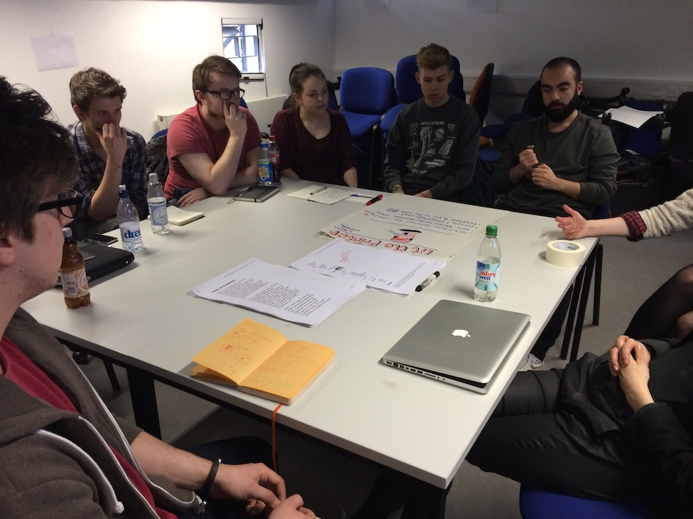
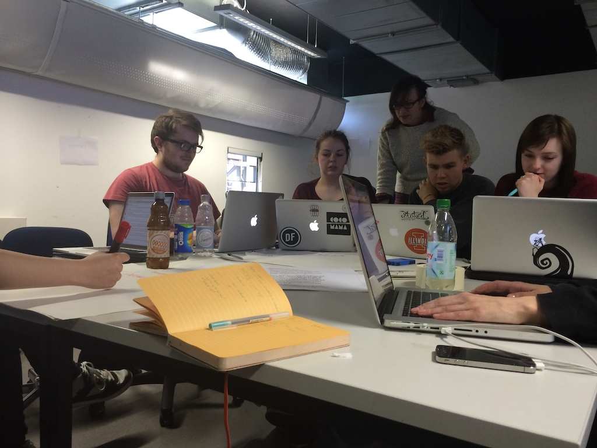
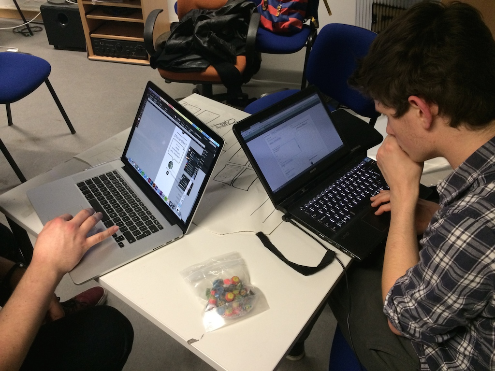
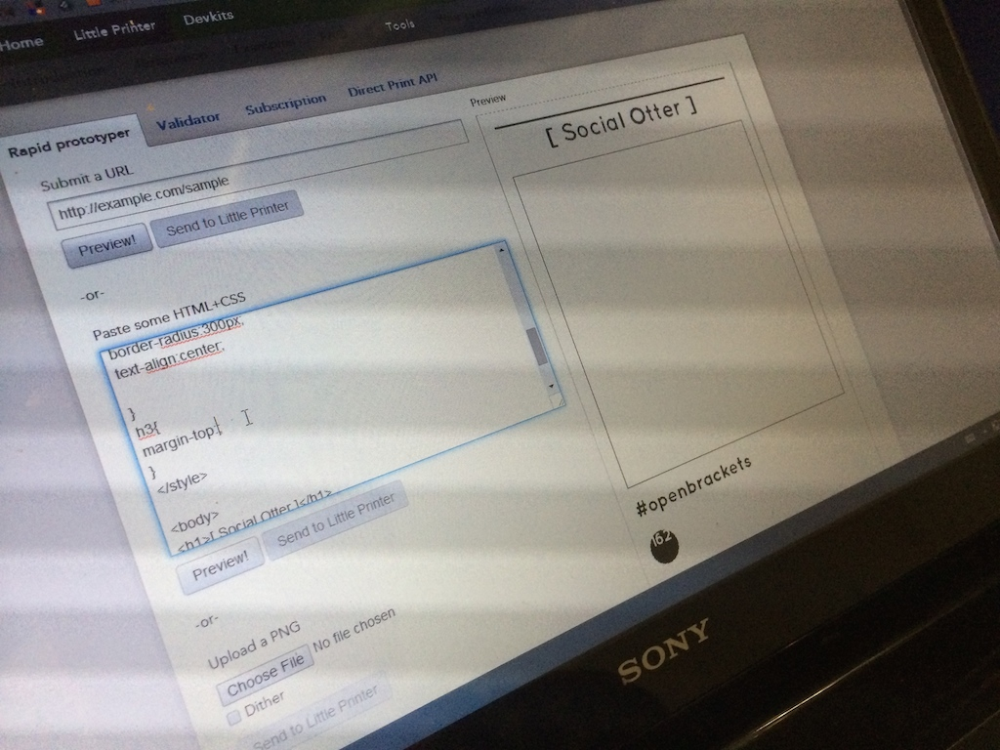
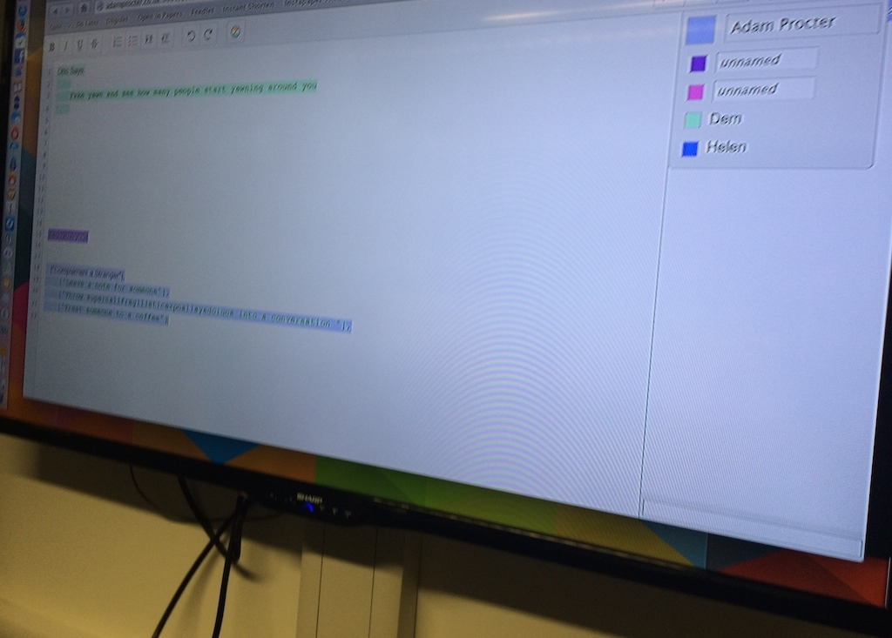
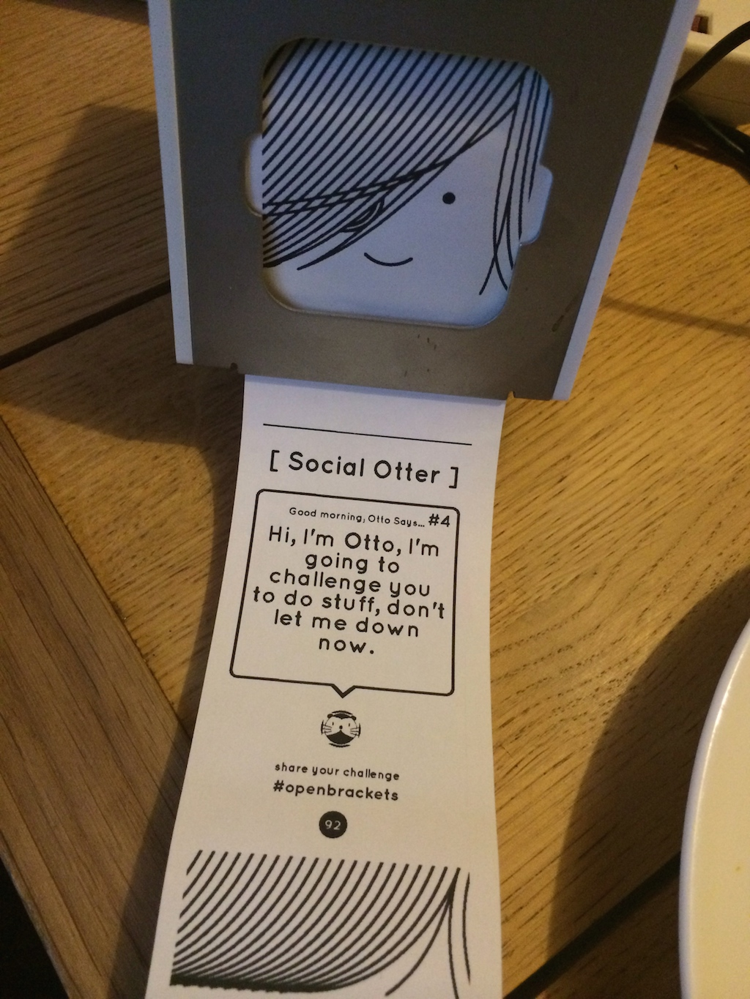

Winchester School of Art invited the team behind the publication littledraw (@rrruckus and @Callygraphy) to help our Graphic Arts course create a unique Little Printer publication for our annual degree show. After a course wide talk about their background and littledraw (obviously). There was a short break followed by the little printer publication workshop.
This workshop was ran as part of our fledgling r&d group, inkubator @_inkubator. The workshop was attended by students from across all of our pathways (graphic design, illustration, photography and motion graphics) and run by @rrruckus, @callygraphy and myself @adamprocter. Programme leader Derek Yates challenged us to make a completed publication that day, in fact we came up with two publications and yes we did make one. This type of project, activity and challenge is key to the ethos for inkubator.
The first shorter part of the workshop started by looking into the detail around the technicalities of making a little printer publication, how littledraw works and was coded, the little printer style guide and we walked through some of the API and examples provided. With the principles set we broke for lunch.
After lunch we printed out A3 sheets of the style guide and fonts and got out the newsprint and marker pens! Using some basic paper prototyping exercises we did quick research and brain storming and created two user stories to drive content ideas, we had in mind those that have little printer's and those that could interact with our own little printer's at an event. We kept it simple and threw around some ideas.
We kept referring to core principles from little printers guidance;
- Regular tools that help with every day life.
- Small snippets of dense, useful information, or tools to use and write on.
- Surprise and delight.
- Beautiful images, engaging text.
Our first publication is designed to create an on demand print publication for visitors to our degree show events in London and Winchester and is about engaging visitors with the student work in a unique way, this publication is very exciting but was not something we could build that day, so this idea was parked for future work and launch at our shows in June.
With focus now on those users that have little printers we started to think about how we could create something delightful that people would be eager to subscribe to and although not directly related to our show could as we surmised that little printers would likely be in design studio's be something to encourage subversion and disruption and include social sharing. Here is where Social Otter was born, we came up with the basic idea for a challenge publication and so we split into smaller groups.
We worked on developing the concept, name, description, font choice, icon, character and some real content, we then jumped onto Macs to make the needed assets, this involved some illustration, mock ups and coding. The name took a while but pushing and having key requirements in the API encouraged the students to make rapid iterations and then confident decisions.
We took the rapid prototype code and converted that into the dynamic content using PHP. To create our database of challenges started really slow, but we needed real content, even for the mock ups in basic HTML and CSS. So we created an etherpad to collaboratively write the challenges and this really sparked fun fast generation where the anonymous nature and collaborative text editing really made it work.
So with Social Otter, Otto will challenge you to do something that day, these tasks range from the silly “tip you hat at stranger” or a good deed “buy a stranger a coffee” and of course some design subversions, such as “send all of todays email in Comic Sans” Subscribers are then encouraged to share there completed challenge via the hashtag #socialotter.
The workshop day was a great success and I am sure you will really enjoy our publication.
